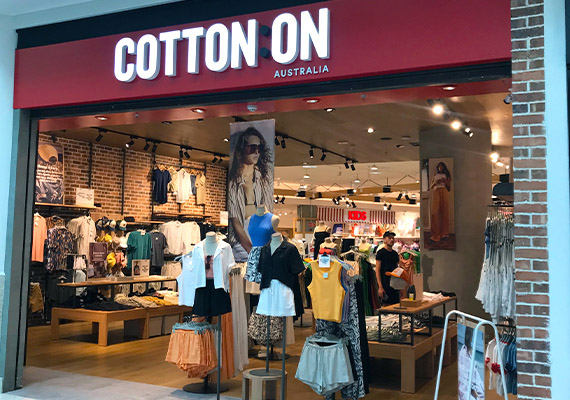
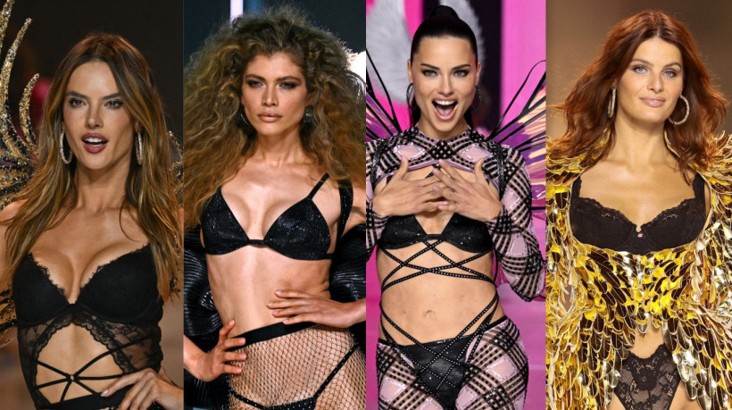

Expansão da Cotton ON no Brasil
A varejista australiana Cotton On anunciou planos de expandir sua presença no Brasil, com a
abertura
de 100 novas lojas nos próximos anos. A marca busca fortalecer sua atuação no mercado
brasileiro,
oferecendo produtos de moda acessíveis e de qualidade.
Ler mais

Victoria's secret
Após um hiato de seis anos, o icônico Victoria's Secret Fashion Show retornou em 2023 com uma
abordagem mais inclusiva. O evento, realizado em Nova York, contou com a participação de modelos
de diferentes perfis, incluindo a brasileira Valentina Sampaio, primeira mulher trans a desfilar
pela marca,
e veteranas como Adriana Lima e Alessandra Ambrosio. Essa mudança reflete o esforço da empresa
em se adaptar às
críticas anteriores sobre a falta de diversidade em suas apresentações.
Ler mais
C&A vence prêmio de inovação sustentável
A C&A foi reconhecida por seu jeans rastreável que utiliza tecnologia blockchain,
vencendo um prêmio de inovação sustentável. A iniciativa permite que os consumidores acompanhem
toda a cadeia produtiva da peça, promovendo transparência e responsabilidade ambiental.
Ler mais

Tendência de calças para 2025
A Vogue Brasil destacou as cinco principais tendências de calças que prometem dominar o
cenário da moda em 2025, com base nas últimas coleções apresentadas nas passarelas.
Entre as tendências estão modelos amplos, cortes assimétricos e tecidos sustentáveis.
Ler mais